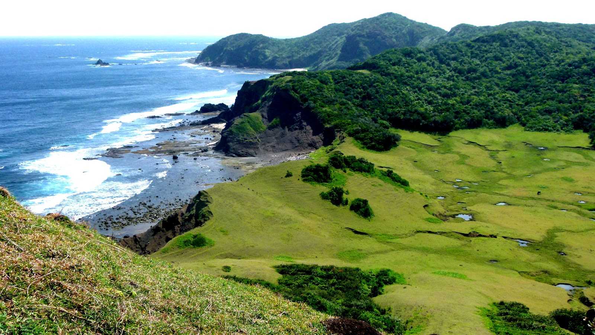

Palaui Island in Santa Ana, Cagayan is one of the most pristine and untouched islands in the Philippines · a protected wildlife sanctuary of dense jungle, white sand beaches, crystal-clear waters, and a 19th-century Spanish lighthouse standing at the northeastern tip of the archipelago.

Located off the northeastern coast of Santa Ana, Cagayan, Palaui Island is a 3,500-hectare protected wildlife sanctuary declared by Presidential Proclamation in 1994. The island is one of the most biodiverse and least disturbed ecosystems in the Philippines · home to rare wildlife, pristine coral reefs, dense tropical forest, and some of the most beautiful beaches in northern Luzon.
The island's most iconic landmark is the Cape Engao Lighthouse — a Spanish colonial lighthouse built in 1892 at the northeastern tip of the island. The lighthouse stands on a dramatic rocky promontory overlooking the Pacific Ocean and the Babuyan Channel, and is reached by a 2₱3 hour jungle trek from the beach. The combination of the historic lighthouse, the wild coastline, and the surrounding jungle makes it one of the most rewarding hikes in the Philippines.
Palaui Island gained international attention when it was featured as a location for the reality TV show Survivor. But beyond the fame, the island remains remarkably unspoiled — there are no permanent tourist facilities on the island, no roads, and no electricity. Visitors camp overnight or return to Santa Ana by boat each day.
Palaui Island is located off Santa Ana, Cagayan — about 3₱4 hours from Tuguegarao City. The jump-off point is the Port Irene area in Santa Ana.
Fly from NAIA Manila to Tuguegarao Airport (1 hour) or take an overnight bus from Cubao (9₱10 hours). Tuguegarao is the main gateway to Cagayan and the starting point for the journey to Palaui.
Flight: ~1 hour | Bus: ~9₱10 hours | ₱700–₱4,000From Tuguegarao, take a van or bus to Santa Ana — about 3₱4 hours along a scenic coastal road. Vans depart from the Tuguegarao terminal throughout the day. Book a seat in advance during peak season.
Van to Santa Ana: ~3₱4 hours | ~₱200–₱300From the Port Irene area in Santa Ana, hire a motorized banca boat to Palaui Island. The crossing takes about 15₱20 minutes. Register at the DENR office in Santa Ana and pay the environmental fee before boarding.
🚌 Boat to Palaui: ~15₱20 min | Boat: ~₱800–₱1,200 | Env. fee: ~₱100Most visitors do a day trip — arriving in the morning, trekking to Cape Engao Lighthouse, swimming at the beaches, and returning to Santa Ana by afternoon. For a deeper experience, overnight camping is allowed with a permit from the DENR office.
Camping permit: ~₱200–₱300 | Lighthouse trek: ~2₱3 hoursClick any pin to explore Palaui Island and nearby attractions in Santa Ana and Cagayan.
Two days gives you time to trek to the lighthouse, explore the beaches, snorkel the reefs, and truly experience the wild beauty of Palaui Island.
Register at the DENR office in Santa Ana, pay your environmental fee, and board your banca boat. The 15₱20 minute crossing offers beautiful views of the coastline and the island ahead.
Begin the 2₱3 hour jungle trek to Cape Engao Lighthouse with your guide. The trail winds through dense tropical forest, crosses streams, and emerges at the dramatic rocky promontory where the 1892 lighthouse stands.
Reach the lighthouse and take in the extraordinary view — the Pacific Ocean stretching to the horizon, the Babuyan Channel to the north, and the wild coastline of Palaui below. The lighthouse itself is a beautiful 19th-century structure in remarkable condition.
Return from the lighthouse and head to Siwangag Cove for swimming and snorkeling. The coral formations around the cove are pristine and teeming with marine life. Set up camp here for the night.
Watch the sunset from the beach — the sky turns extraordinary shades of orange and pink over the Pacific. Cook dinner over a campfire and fall asleep to the sound of waves. This is what Palaui is all about.
Wake up for sunrise — with no other visitors around, the beach is completely yours. The morning light on the water and the jungle behind you is one of the most peaceful and beautiful moments you can experience in the Philippines.
Ask your boatman to take you around the island to explore other beaches and coves. Each one is different — some have dramatic rock formations, some have shallow reefs, and some are completely deserted.
Board your boat back to Santa Ana. From there, you can head to Port Irene for a look at the deep-water port, or begin your journey back to Tuguegarao and Manila.
"Palaui Island is the most pristine place I have ever been in the Philippines. We camped overnight and woke up to a completely empty beach at sunrise — just us, the ocean, and the jungle. The lighthouse trek is tough but the view from Cape Engao is worth every step. This is what the Philippines looked like before tourism. Protect it at all costs."
"The snorkeling at Siwangag Cove was the best I've experienced in northern Luzon — the coral is completely intact and the fish life is extraordinary. But the highlight was the lighthouse. Standing at Cape Engao with the Pacific stretching out in every direction, knowing you're at the northeastern tip of the Philippines · it's a feeling I can't describe. Palaui is a treasure."